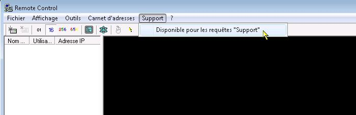
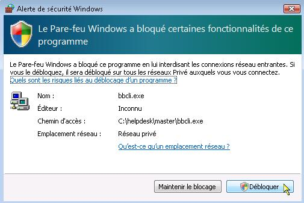
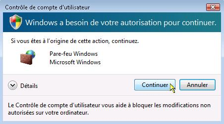
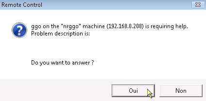

Une fois téléchargé, l'intégralité du module maitre doit être décompressé dans un répertoire (par
exemple C:\helpdesk, ou dans un dossier sur le bureau).
Ensuite, il sufft de lancer
le programme
bbcli.exe depuis ce
répertoire.
Mise en disponibilité pour le support
Ceci signifie simplement activer le serveur qui va accepter les requêtes de support
qui seront envoyés par des utilisateurs de HelpDesk, et se fait en utilisant le menu Support / Disponible pour les requêtes "Support"

Une fois l'option activée, l'application va écouter sur le port TCP 7429
(par défaut).
La première fois que vous activez l'option, sous Windows XP SP2 ou VISTA et supérieur,
le pare-feu (firewall) deWindows va vous avertir qu'un programme veut activer un serveur TCP/IP
Fenêtre d'avertissement du pare-feu Window
Windows XP SP2, VISTA et supérieur afficheront probablement la fenêtre d'avertissement suivante:

Cliquez sur le bouton Débloquer.
(Note: la manipulation sera légèrement différente si vous utilisez un autre pare-feu
que le pare-feu standard livré avec Windows. Vous devez peut être dans ce cas autoriser
manuellement l'écoute sur le port TCP 7429; référez vous à la documentation du pare-feu
en question pour effectuer cette opération)
Confirmation demandée par l'UAC (User Access Control de Windows VISTA)
Si vous êtes connecté avec un profil Administrateur
la fenêtre suivante devrait apparaitre:

Choisissez Continuer.
Si vous n'êtes pas connecté avec un profil Administrateur //#TODO: USE FIREWALL
SCREEN SHOT
la fenêtre suivante devrait apparaitre:
Choisissez l'un des utilisateurs de type Administrateur présenté
dans la liste, saisissez le mot de passe, et cliquez sur OK.
Réception d'une demande de support
Connaitre l'adresse IP à donner à la personne qui va demander du support
L'utilisateur qui demande du support doit connaitre l'adresse IP à saisir dans la
fenêtre de demande de support de HelpDesk
(vous devrez donc la lui communiquer par EMail ou par téléphone par exemple).
Afin de connaitre votre adresse IP publique, vous pouvez utiliser IPCONFIG dans
une invite de commande, ou plus simplement un site Web, tel http://www.whatismyip.fr/
ou http://whatismyip.com/
Notez que votre adresse IP risque de changer au moins une fois par jour si vous
ne disposez pas d'une IP fixe.
Réception d'une demande de support
Une fois que l'utilisateur qui demande du support a saisi l'adresse IP que
vous lui avez communiquée dans la fenêtre de
demande de support de HelpDesk, puis cliqué sur OK,
la connexion s'établit entre le PC de l'utilisateur et votre machine.
Une fenêtre de ce type doit apparaitre sur votre bureau:

Répondez Oui afin de confirmer la connexion avec l'utilisateur.
Le bureau distant de l'utilisateur doit alors apparaitre en quelques secondes.
Prendre le controle de la machine distante
Il suffit de cliquer sur le l'image représentant une souris (

")